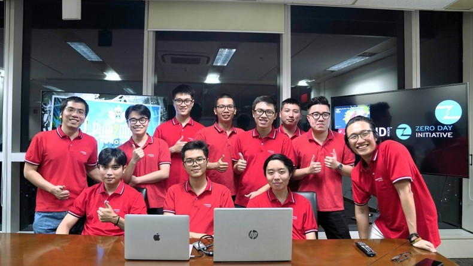

A team of Viettel Cyber Security, a member of Viettel Group, won the Pwn2Own Toronto 2023, marking the first time a Vietnamese cybersecurity company has ranked first in the world’s leading contest in cyber-attacks.
The 16-member team showcased their skills to attack different targets, including mobile phones, printers, smart speakers, Small Office/Home Office (SOHO) smash-up, and network attached storage.
Launched by the Zero Day Initiative in 2007, Pwn2Own is an annual global hacking competition to find previously unknown security vulnerabilities.
This year’s contest attracted more than 20 teams from 17 countries, who participated in eight categories consisting of Mobile Phones, Home Automation Hub, Smart Speakers, Printers, Surveillance Systems, Network Attached Storage, Google Devices, and SOHO Smash-up.